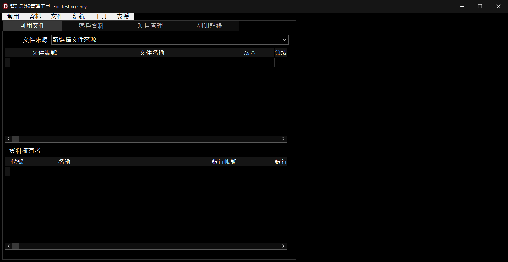

主視窗
主視窗是日常填寫及列印文件的地方：左邊「工作頁」選擇要用的文件，右邊「輸入區域」填寫內容並列印，上方「功能表」則是其他功能的入口。
- 工作頁「可用文件」選擇「文件來源」，再點選要使用的文件。
- 點選「資料擁有者」。
- 於輸入區域填寫內容後，按「列印」。
備註：
- 文件若尚未指定印表機，請先於「常用 > 印表機」設定 1 次。
- 按 Enter 鍵即可移到下一個欄位；關閉「列印預覽」後，連續輸入、列印多份都不必用滑鼠，可提升工作效率。
區域說明
- 功能表：常用、資料、文件、紀錄、工具、支援 6 個選單，設定與管理功能都在這裡。
- 工作頁：選擇文件及資料擁有者，查看客戶、項目等參考資料，並可叫出以前的列印記錄重複使用。
- 輸入區域：顯示文件畫面，直接在對應位置填入資料，再預覽或列印。
調整寬度：螢幕解析度較低時，可拖拉工作頁與輸入區域之間的分隔線，或調整輸入區域的「縮放」，讓文件完整顯示，方便輸入。
